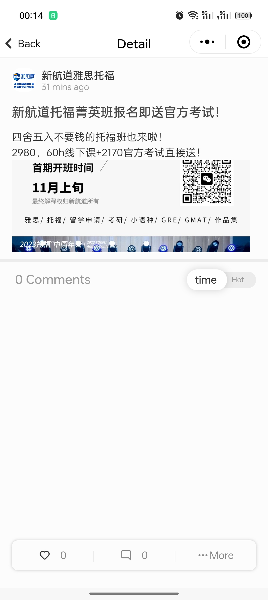
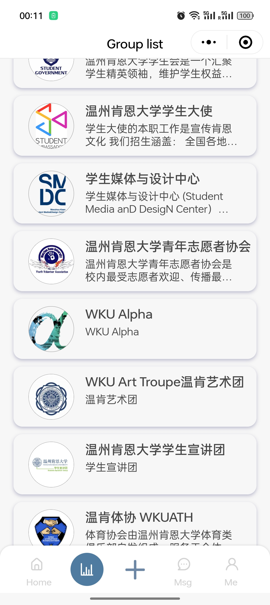
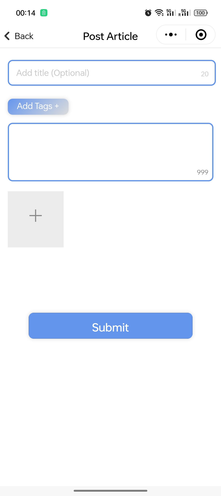
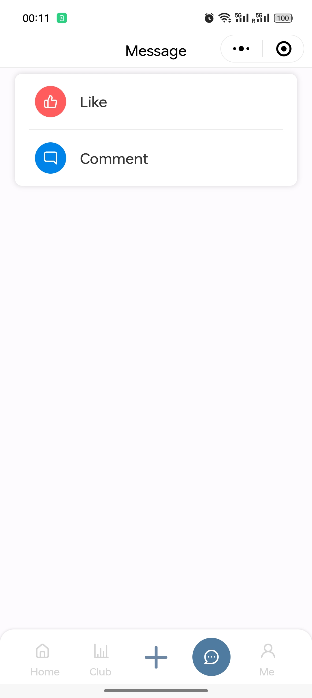
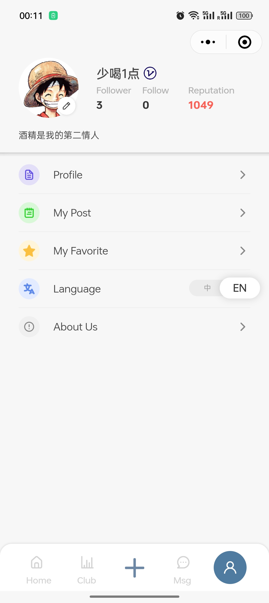

This is the main page of the mini-program.
At the top is the search bar which allow user to search the target article by keywords.
Following it is the top 10 hot articles, which will scroll automatically.
Then is all the articles post by users whcih display from top to bottom ordered by time.

Detail Page
This is the detail page of the post article.
It will show the avatar and nickname of the user who post it.
The content and images will display under the information of the post user.
Following is the comment area which display all the comments to the article.
At the bottom of the page is the tool bar that can 'like' the artcile,
comment the article or report it.

Club Page
This is the club page.
In this page, all the school's club or student organization will be listed.
Click the related name will jump to the detail page of each club.

Post Page
This is the detail page of the post article.
It is the page to post an article.
User can add a title to the article optionally.
Then they have to input the content of article.
After that they can add at most 9 images.
If everything is done, user can click the "submit" button to post this artcile.

Message Page
This is the message page of the post article.
The users' interaction will incicated here.
User will recive notice if someone comment or 'like' their article.
User can also send a message to another user's, the conversation will be shown here.

Profile Page
This is the profile page of the post article.
The user's basic information which includes nickname, avatar, followers number, following number
the reputation and so on will be shown in this page.
There also provides the entries for user to modify their information, change the language, or
check the information of the develop team.